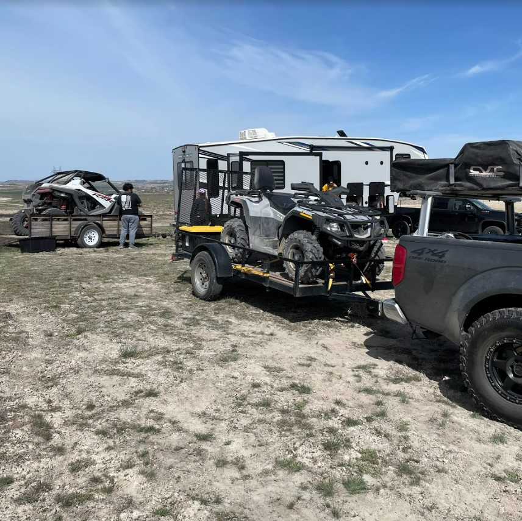
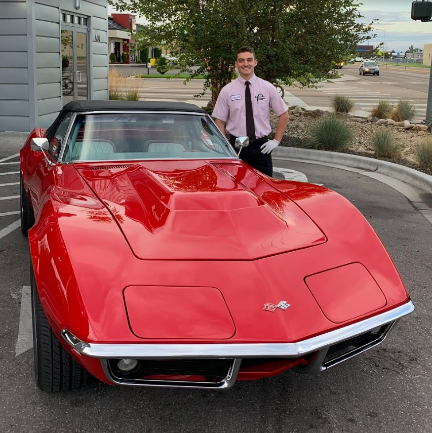
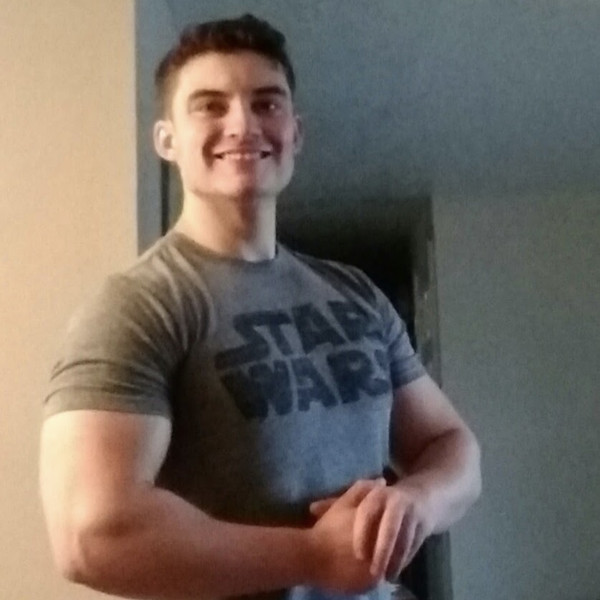

Camping and Exploring
I find that living in Idaho provides endless opportunity to spend time outdoors. I have never had a liking for hunting or fishing
but I love being in the sun whether I'm hiking, off-roading, swimming, or spending a weekend living among nature. Whether it's a small
hike up Table Rock in Boise or appreciating the gorgeous views of the sawtooths, all of us have the opportunity to enjoy the nature
of our back yard!

Cars and Trucks
I've been working on vehicles since High School and find it very rewarding to know how to fix something yourself. My first car project was
a 1999 Toyota Camry that had a damaged engine that I needed to fix if I wanted to have a ride while I was in school, and after discovering
the joy that modifying vehicles gave me I've been upgrading my cars ever since. Anyone can get a start in modifying or general maintenance
from a quick YouTube video!

Fitness and Bodybuilding
Being that I had an upbringing playing football and baseball in my neighborhood culdesac I found great joy in competition and sports. I
played baseball for 3 years in high school and started weight lifting to become bigger and stronger. The discipline and rigidity of body
building taught me a work ethic that I've carried with me in everything I do.